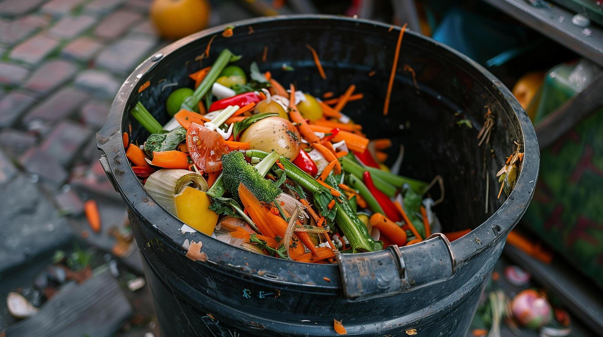
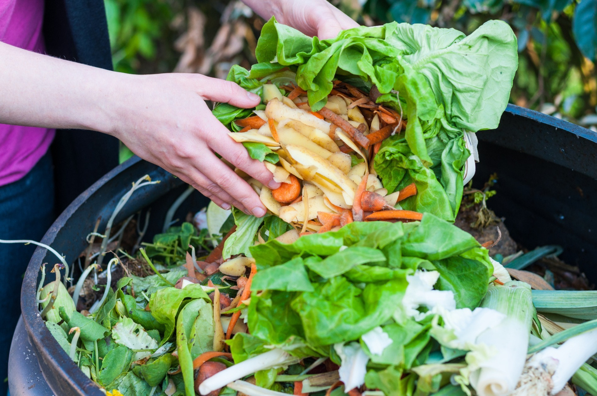
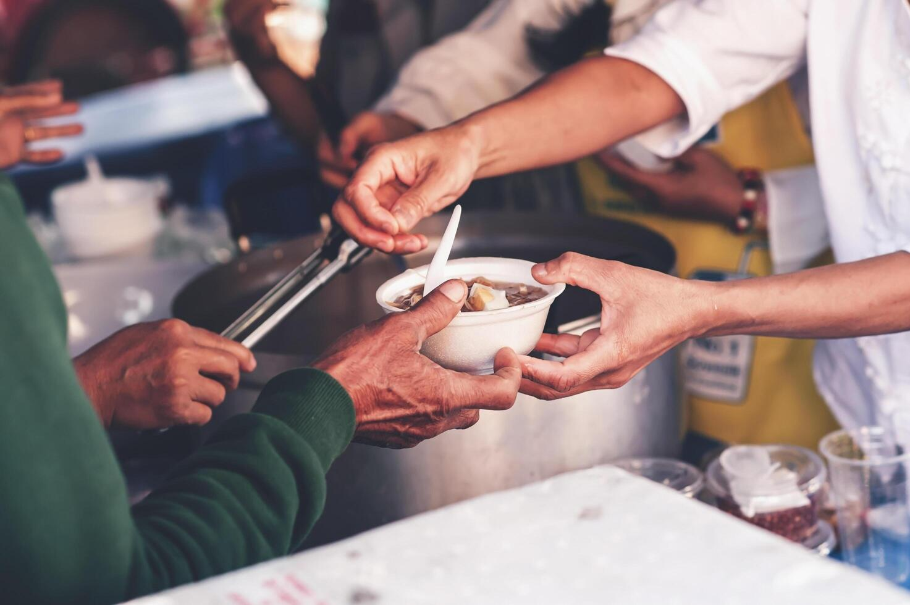
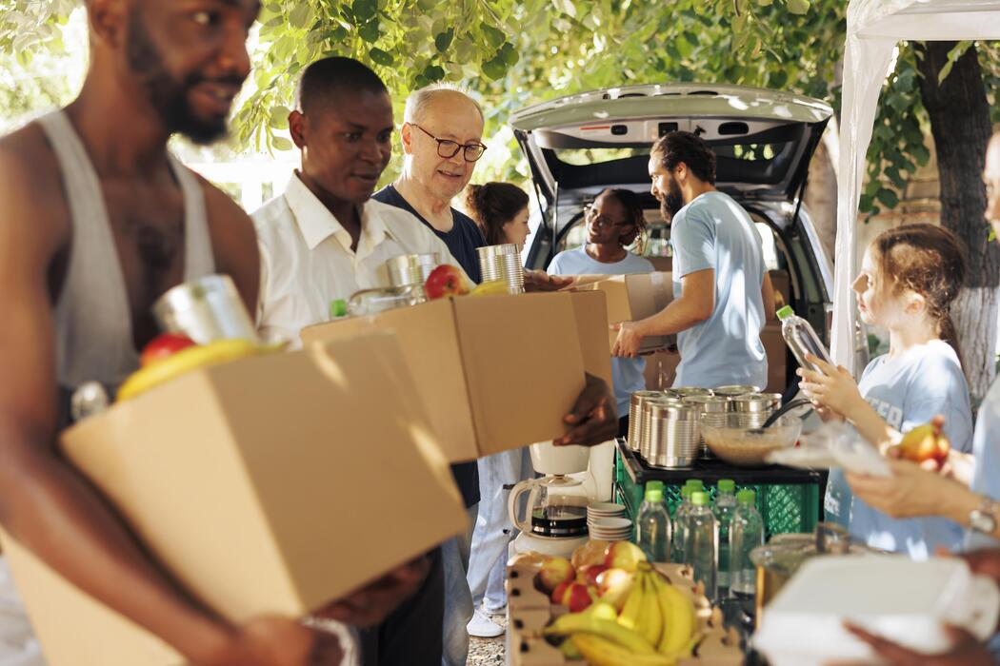
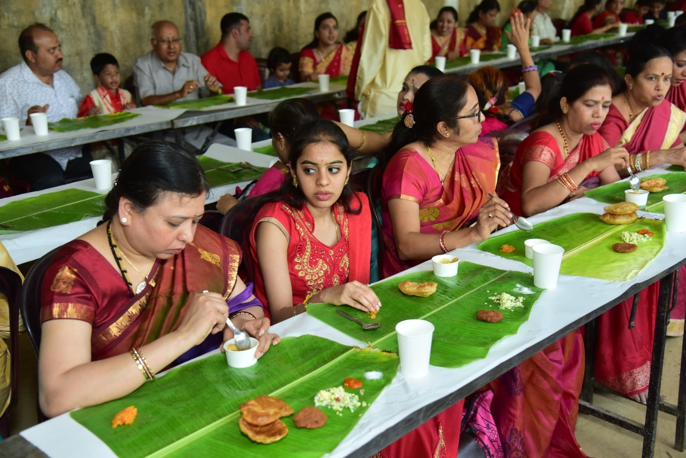
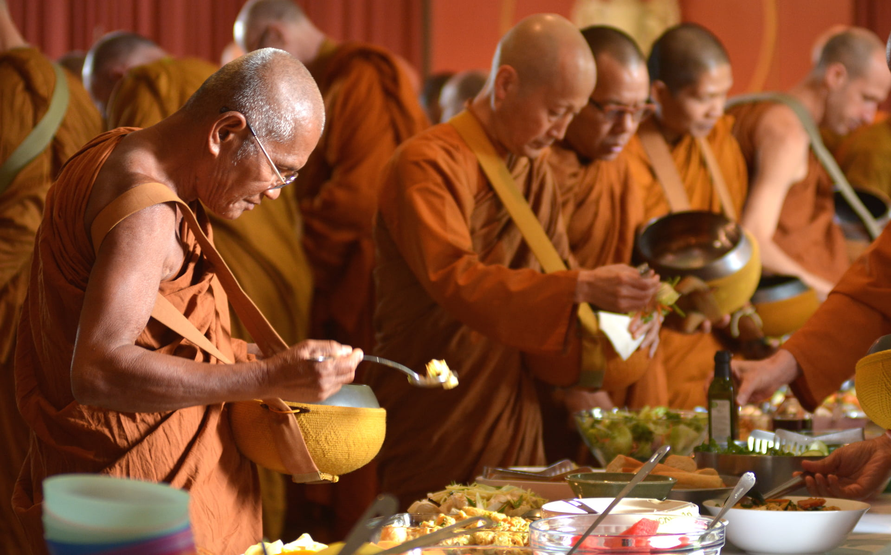
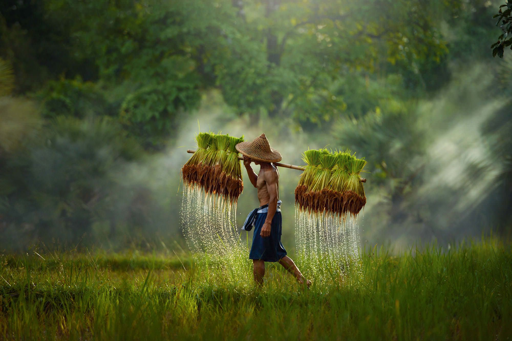
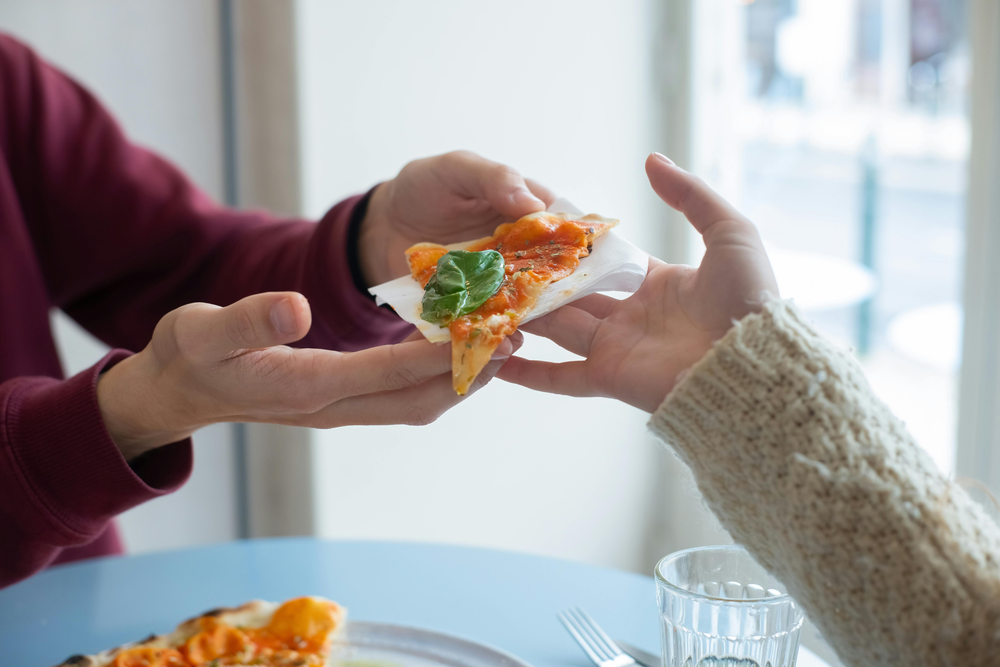

The bin is not hungry… people are.

You waste in seconds… someone waits for days.

A shared meal tastes better… because it carries kindness.

Food doesn’t need you… people do. Share it.

Food deserves a plate, not a bin.

Throwing food is easy… feeding isn’t.

Behind every grain… there’s a tired farmer.

Stop wasting, start sharing
We are a Real-Time Food Waste Redistribution Platform focused on reducing food wastage and hunger.
Our mission is to connect food donors with NGOs and volunteers efficiently.
We help restaurants, hotels, and event organizers donate surplus food instead of wasting it.
Our system uses real-time notifications to alert nearby NGOs instantly.
We provide location-based tracking (GPS) for quick and reliable food pickup.
Our platform ensures safe, timely, and transparent food distribution.
We aim to create a sustainable ecosystem by minimizing waste and maximizing impact.
We support Zero Hunger and Responsible Consumption goals.
We believe that every meal saved can change a life.
Our vision is to build a smarter, hunger-free society using technology.
At Food Redistribution System (RT-FWRS), we are committed to protecting your privacy and ensuring the security of your personal information. This policy explains how we collect, use, and safeguard your data.
Information We Collect: We collect personal details such as name, email, phone number, and location during registration. We also collect food donation details like food type, quantity, and pickup location.
How We Use Your Information: Your information is used to connect food donors with NGOs and volunteers, send real-time notifications, and improve platform performance.
Data Sharing: We do not sell or trade your personal data. Information is only shared with verified NGOs and volunteers for food pickup and delivery coordination.
Data Security: We use secure authentication, encryption, and role-based access (Donor / NGO / Admin) to protect your data from unauthorized access.
Cookies: Our website may use cookies to enhance user experience and analyze usage. You can disable cookies in your browser settings.
Third-Party Services: We may use map services for location tracking and cloud platforms for data storage. These services follow their own privacy policies.
Your Rights: You can access, update, or request deletion of your personal data at any time by contacting us.
Changes to This Policy: We may update this policy periodically. Changes will be reflected on this page.
If you have any questions, contact us at support@greenbin.com.